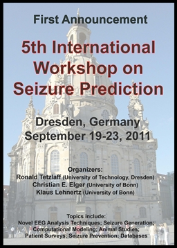

|
home | help | email |


Fourth
International
Workshop
on
Seizure
Prediction
|
|
 |
|
The book, "Epilepsy: The Intersection of Neurosciences, Biology, Mathematics, Engineering and Physics," containing proceedings from IWSP4 and the Sanibel Symposium (Nocturnal Frontal Lobe Epilepsy: An Interdisciplinary Perspective) was released in May 2011 by CRC Press/Taylor & Francis Group.
Three manuscripts were published in Epilepsy and Behavior:

Click here to download a flyer for IWSP5.
The Fourth International Workshop on Seizure Prediction (IWSP4) was hosted in Kansas City on June 4-7, 2009 by the Alliance for Epilepsy Research. A total of 154 investigators, of which 37 were students, participated in the workshop. The investigators were from 17 countries and included members of academic groups and industry representatives. Funding for the workshop was received from foundations, government agencies, industries, university and hospital partners and individuals. Eleven investigators were nominated as Women, Minority or Junior Investigators, and received fellowships funded by NIH to defray participation costs. The workshop consisted, in the main, of the following sessions: 1. Didactic Sessions. Two parallel didactic sessions composed of 6 one-hour lectures were convened on the first day of the workshop, one session on engineering, math and physics for physicians and one on epilepsy for non-physicians. The parallel didactic sessions were followed by a joint didactic session of 3 one-hour lectures for all participants. The purpose of the 3 didactic sessions with 15 one-hour lectures was to bring the diverse participants to a common understanding of the problem of seizure prediction, detection and control and the solutions being proposed. 2. Challenge of Seizure Prediction. Four keynote speakers with expertise in disciplines that rely heavily on prediction were invited to help those working on seizure prediction better understand the challenges inherent to this endeavor and expose them to certain approaches and tools that may be used in epilepsy to fulfill the aim of predicting seizures. The topics discussed included what makes the behavior of a system predictable, seismic prediction, prediction in materials and finance, non-linear brain dynamics of complex partial seizures and synchronization in complex networks. 3. State of Seizure Prediction. Presentations were made by representatives of 25 academic and industry groups conducting work in seizure prediction and related fields. The State of Seizure Prediction session was composed of four parts: Seizure Prediction and Detection I and II, Seizure Generation, and Seizure Control. 4. Seizure Prediction Competition. A competition was conducted on data within the Freiburg EEG database and the participation of three academic groups in the competition was recognized. 5. Poster Presentations. An open invitation was issued to investigators to submit posters to IWSP4 and 43 posters were accepted for presentation. The posters were displayed during Days 2-4 of the workshop and a special session was dedicated to the poster presentations at the end of Day 3. Two posters (one each in clinical and basic science fields) were selected as the best posters by 6 independent poster judges and the authors of these posters were presented with an award. 6. Debates. Six debates were held on the final day of the workshop. Twelve investigators were selected to debate the 6 issues, and the audience was allowed to participate during an open session during each debate. The debates allowed discussion and clarification of key issues. In addition to the above 6 sessions there were a technology session with two presentations which discussed advances in technology for brain implantable devices; an industry session with presentations and discussion by a panel composed of representatives from 6 companies and a university technology transfer office; a presentation on collaborative efforts to create an intracranial EEG database; a patient perspectives session where a survey of patient viewpoints was presented; and a consensus session where workshop participants discussed IWSP4, the workshop series, and progress towards seizure prediction and control. Chairs for the different sessions were international experts in the different areas. At the end of Day 2 there was an entertainment session at the American Jazz Museum and Negro Leagues Baseball Museum featuring Kansas City barbeque and jazz. IWSP4 sponsors were recognized during the entertainment session. The workshop was very well received based on informal discussions and initial feedback. Click here for the results of a formal survey of participants. For presentations that are available online, click here to go to the Program page. For more information about this collaborative effort and on the first three workshops click on the background tab at the left.
Funding for this conference was made possible in part by Grant Number R13NS065535 from the National Institute Of Neurological Disorders And Stroke (NINDS), Office of Rare Disease Research (ORDR) and National Institute of Child Health and Human Development (NICHD). The views expressed in written conference materials or publications and by speakers and moderators do not necessarily represent the official views of the NINDS, ORDR, NICHD or National Institutes of Health (NIH) and do not necessarily reflect the official policies of the Department of Health and Human Services; nor does mention by trade names, commercial practices, or organizations imply endorsement by the U.S. Government.
Copyright 2009-2011 - Fourth International Workshop on Seizure Prediction - All Rights Reserved |
|
 Epilepsy: The
Intersection of Neurosciences, Biology, Mathematics,
Engineering and Physics, Editors: Osorio I, Zaveri HP,
Frei MG, Arthurs S, CRC Press, 2011.
Epilepsy: The
Intersection of Neurosciences, Biology, Mathematics,
Engineering and Physics, Editors: Osorio I, Zaveri HP,
Frei MG, Arthurs S, CRC Press, 2011.